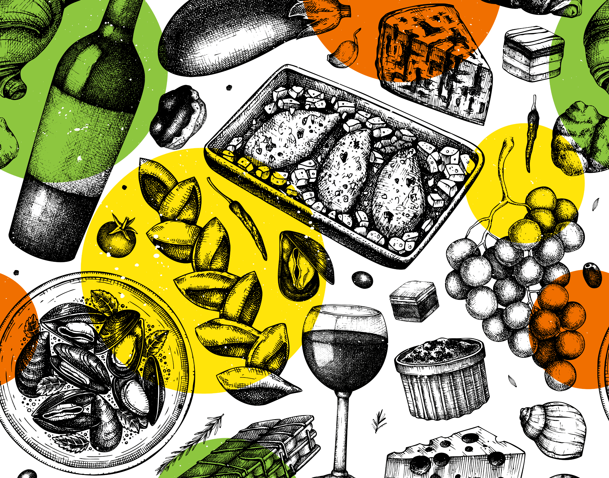

Mentoriranje
Od vjerne gošće do chefa! Kako se ova djevojka našla usred avanture života? Što je sve naučila uz chefa Marina Medaka, Maja će demonstrirati na na gasto eventu Food Market by Story Gourmet, koji će se održati u travnju u zagrebačkoj Hali.
Diplomirani ekonomist u životnom izazovu! Ovo nikako nisam htio propustiti Luka Džaja jedan je od četiri sudionika izazova "Kuhaj kao chef" koji Story Gourmet organizira s poznatim zagrebačkim restoranima, a koje će svoje finale imati od 7. do 10. travnja u zagrebačkoj Hali, na gasto eventu godine - Food Marketu by Story Gourmet.
Upoznajte Duju Prlja, jednog od kandidata našeg natječaja “Kuhaj kao chef” Izaberite pobjednika natječaja na eventu Food Market by Story Gourmet

San pomalo postaje stvarnost! Kako je iskustvo iz poznate zagrebačke slastičarnice sve promijenilo, Krešimir Bonačić Krešić, jedan od kandidata iz našeg natječaja "Kuhaj kao chef", s mentorom iz slastičarnice Magnolia odradio je "lavovski posao" i naučio sve čari ovog zanata, koje će demonstrirati na gasto eventu Food Market by Story Gourmet, koji će se održati u travnju u zagrebačkoj Hali